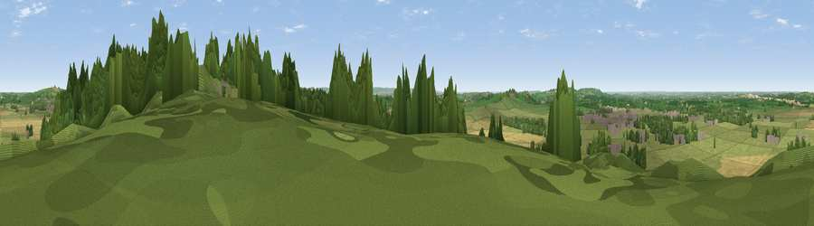

Viewpoint near Waddesdon
#39599 in England · top 52% of its area beats it · near WaddesdonWhere it is
The exact computed spot (SP 72925 16575). Click the marker for map links.
The view, rendered

A 360° render of this exact spot computed from the terrain model, tree cover and land cover — summer colours, afternoon light, calibrated against photographs of famous viewpoints. Real trees, hedges and buildings will differ in detail.
The panorama
Grey silhouette: terrain skyline in each direction (720 bearings, Earth curvature and refraction included). Dashed green: skyline with trees (+15 m) and buildings (+8 m) as obstacles. Blue strip: how far the ground is visible on each bearing.
Where the view opens
Wedge length = distance to the farthest visible ground on that bearing (vegetation-aware). Rings at 10, 25 and 50 km.
What fills the view
62% grassland · 22% cropland · 14% woodland · 2% built-up
Angular shares of the visible panorama (visual magnitude), not map area. Landscape diversity 0.43 (0–1 Shannon).
Key numbers
More beautiful places nearby
The staircase of upgrades: each row has a higher view potential than everything closer. Driving times are estimates from straight-line distance, calibrated against real road routing — check an actual route before setting out.
| Place | Direction | Drive | Score |
|---|---|---|---|
| Viewpoint near Waddesdon | E · 0 km | ~2 min | 34.8 |
| Viewpoint near Ashendon | SW · 2 km | ~5 min | 44.2 |
| Viewpoint near Upper Winchendon | ESE · 3 km | ~8 min | 54.5 |
| Viewpoint near Upper Winchendon | SSE · 4 km | ~8 min | 58.9 |
| Viewpoint near Ashendon | SW · 4 km | ~9 min | 65.0 |
| Muswell Hill | W · 9 km | ~18 min | 67.9 |
| Beacon Hill | SE · 15 km | ~27 min | 72.7 |
| Coombe Hill Monument | SE · 15 km | ~27 min | 75.5 |
51.84302, -0.94286 · source: screening · position refined by local search. Computed location — check access rights before visiting.